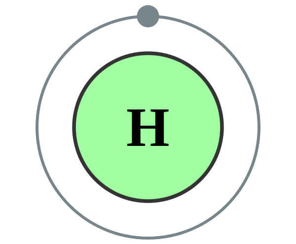

→
Hydrogen is a chemical element with symbol H and atomic number 1. With a standard atomic weight of 1.008, hydrogen is the lightest element on the periodic table. Its monatomic form (H) is the most abundant chemical substance in the Universe, constituting roughly 75% of all baryonic mass. Non-remnant stars are mainly composed of hydrogen in the plasma state. The most common isotope of hydrogen, termed protium (name rarely used, symbol 1H), has one proton and no neutrons.
The universal emergence of atomic hydrogen first occurred during the recombination epoch. At standard temperature and pressure, hydrogen is a colorless, odorless, tasteless, non-toxic, nonmetallic, highly combustible diatomic gas with the molecular formula H2. Since hydrogen readily forms covalent compounds with most nonmetallic elements, most of the hydrogen on Earth exists in molecular forms such as water or organic compounds. Hydrogen plays a particularly important role in acid–base reactions because most acid-base reactions involve the exchange of protons between soluble molecules. In ionic compounds, hydrogen can take the form of a negative charge (i.e., anion) when it is known as a hydride, or as a positively charged (i.e., cation) species denoted by the symbol H+. The hydrogen cation is written as though composed of a bare proton, but in reality, hydrogen cations in ionic compounds are always more complex. As the only neutral atom for which the Schrödinger equation can be solved analytically,study of the energetics and bonding of the hydrogen atom has played a key role in the development of quantum mechanics.
Hydrogen gas was first artificially produced in the early 16th century by the reaction of acids on metals. In 1766–81, Henry Cavendish was the first to recognize that hydrogen gas was a discrete substance, and that it produces water when burned, the property for which it was later named: in Greek, hydrogen means "water-former".
Industrial production is mainly from steam reforming natural gas, and less often from more energy-intensive methods such as the electrolysis of water.Most hydrogen is used near the site of its production, the two largest uses being fossil fuel processing (e.g., hydrocracking) and ammonia production, mostly for the fertilizer market. Hydrogen is a concern in metallurgy as it can embrittle many metals, complicating the design of pipelines and storage tanks